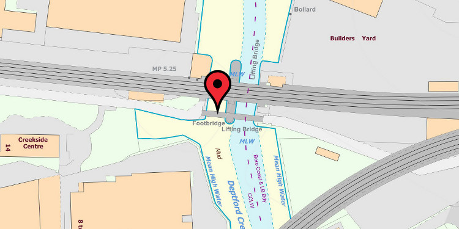

Map
We want your stories about the Ha'penny Hatch Bridge! tell us your stories, tell us what you know, what you'd like to know.
Please post your story or questions to hapennyhatch@deptfordcreek.net.
We want your stories about the Ha'penny Hatch Bridge! tell us your stories, tell us what you know, what you'd like to know.
Please post your story or questions to hapennyhatch@deptfordcreek.net.